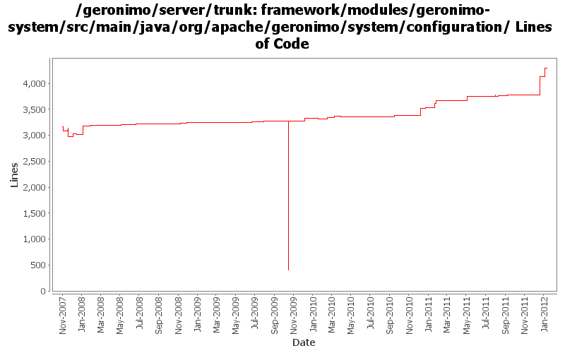

[root]/framework/modules/geronimo-system/src/main/java/org/apache/geronimo/system/configuration
 cli
(1 files, 59 lines)
cli
(1 files, 59 lines)
 condition
(4 files, 474 lines)
condition
(4 files, 474 lines)

| Author | Changes | Lines of Code | Lines per Change |
|---|---|---|---|
| Totals | 153 (100.0%) | 5154 (100.0%) | 33.6 |
| djencks | 90 (58.8%) | 4077 (79.1%) | 45.3 |
| xuhaihong | 19 (12.4%) | 592 (11.5%) | 31.1 |
| gawor | 14 (9.2%) | 160 (3.1%) | 11.4 |
| gdamour | 4 (2.6%) | 128 (2.5%) | 32.0 |
| hanhongfang | 4 (2.6%) | 50 (1.0%) | 12.5 |
| jaydm | 2 (1.3%) | 39 (0.8%) | 19.5 |
| delos | 1 (0.7%) | 36 (0.7%) | 36.0 |
| linsun | 5 (3.3%) | 32 (0.6%) | 6.4 |
| jdillon | 8 (5.2%) | 22 (0.4%) | 2.7 |
| genspring | 2 (1.3%) | 13 (0.3%) | 6.5 |
| rwonly | 1 (0.7%) | 2 (0.0%) | 2.0 |
| kevan | 2 (1.3%) | 2 (0.0%) | 1.0 |
| jlaskowski | 1 (0.7%) | 1 (0.0%) | 1.0 |
GERONIMO-6249 check for config.ser before trying to read it
19 lines of code changed in 1 file:
GERONIMO-6251 More changes to use OsgiMetaDataProvider, update the interface a bit.
GERONIMO-6254 Shared library does not work in the deployment process
10 lines of code changed in 2 files:
GERONIMO-6251 determine if server is actually fully started, provide access to DependencyManager for osgi metadata purposes
55 lines of code changed in 2 files:
GERONIMO-6249 make sure existing bundle is at least starting before trying to activate it
4 lines of code changed in 1 file:
GERONIMO-6249 use extender pattern (in DependencyManager) instead of ConfigurationActivator
96 lines of code changed in 1 file:
GERONIMO-6249 use RecursiveBundleTracker in DependencyManager
62 lines of code changed in 1 file:
GERONIMO-6240 Fix the InstallModulesMojo to work without osgi or a kernel
5 lines of code changed in 1 file:
GERONIMO-6240 Make several base geronimo functions (kernel, deployer, etc) DS services and make the car-maven-plugin take advantage of that. Server assembly doesn't work yet, builds framework.
542 lines of code changed in 6 files:
GERONIMO-6240 better warning message
1 lines of code changed in 1 file:
GERONIMO-6157 Generate fixed version number for the import packages
23 lines of code changed in 1 file:
GERONIMO-6144 NPE in DependencyManager if configurations/bundles are uninstalled
8 lines of code changed in 1 file:
GERONIMO-6119 upgrade geronimo-system to use commons-jexl 2.0
2 lines of code changed in 1 file:
GERONIMO-6106 Clean up temp files created in the deployment process
a. Start the reaper thread on the server start up, it will clean up the temp files generated by FileUtils in the last run
b. Keep a temp file list in the DeploymentContext, and will be deleted after the deployment finished
15 lines of code changed in 1 file:
Using Properties class in felix util package to keep the config-substitutions in section as they are defeined. GERONIMO-5310 Better ordering for config-substitutions.properties
7 lines of code changed in 1 file:
revert rev1153013.
3 lines of code changed in 1 file:
GERONIMO-5310 Better ordering for config-substitutions.properties
32 lines of code changed in 1 file:
GERONIMO-6058 Replace StringBuffer usage with StringBuilder
2 lines of code changed in 2 files:
GERONIMO-6021 read and write the config.info file using UTF-8 encoding
1 lines of code changed in 1 file:
GERONIMO-5938: Load JSF taglib xml files from bundles - considered wired bundles in addition to dependencies
4 lines of code changed in 1 file:
GERONIMO-5938 Load JSF taglib xml files from bundles
96 lines of code changed in 1 file:
Add doStop method to do some clean up work
69 lines of code changed in 1 file:
GERONIMO-5283 Server restart fails after a hard stop
10 lines of code changed in 1 file:
Use client artifact resolver while generating import packages for client module, as it uses different artifact aliases mapping
8 lines of code changed in 1 file:
GERONIMO-5680 Remove dynamic import * and use calculated import packages on the runtime, only for deployed applications now
137 lines of code changed in 1 file:
DependencyManager now maintains the bundle dependency relations, it somewhat likes the classloader hierarchy
27 lines of code changed in 1 file:
GERONIMO-5680 DependenyManager will record the bundle dependency relation
142 lines of code changed in 1 file:
GERONIMO-5658 deploy --inPlace broken for quick start sample,
The files in the inPlace configuration dir was not copied to the deployed repo artifact.
3 lines of code changed in 1 file:
GERONIMO-5568 it's problem of exporting plugin. Now, all deployed artifact has been in format of car package, so update original code to read from a package instead of a directory
36 lines of code changed in 1 file:
tell the DependencyManager to shut up
7 lines of code changed in 1 file:
XBEAN-148 use new xbean-bundleutils
1 lines of code changed in 1 file:
GERONIMO-4933 Some optimization for loaded bundle checking
12 lines of code changed in 1 file:
Missed in previous commit. Not really needed anymore as we generate OBR repository for the contents of the repository directory at startup
1 lines of code changed in 1 file:
add some toString methods and some logging to help figure out what happens during deployment
11 lines of code changed in 2 files:
GERONIMO-5176 tell the DependencyManager about artifact aliases
12 lines of code changed in 1 file:
use felix obr api instead of osgi api
3 lines of code changed in 1 file:
install DependencyManager for client container and fix debug message
1 lines of code changed in 1 file:
GERONIMO-4971 include obr repository.xml in every plugin, and install it into an obr instance when the plugin is installed. Also update the aries plugin and build it. The framework geronimo-obr module is written by Jarek Gawor with minor changes
27 lines of code changed in 1 file:
GERONIMO-5009 Enable Java EE package deployment in Geronimo 3.0
21 lines of code changed in 1 file:
GERONIMO-5008 Create util methods for all the Geronimo components
15 lines of code changed in 1 file:
GERONIMO-5008 Create util methods for all the Geronimo components
14 lines of code changed in 1 file:
(44 more)